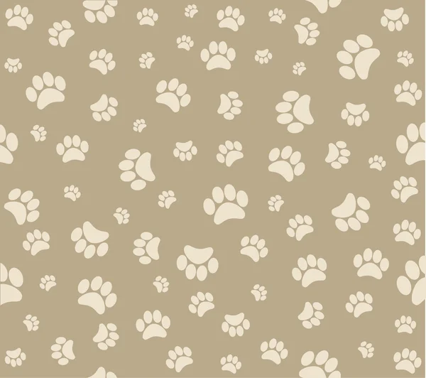

Esse site foi construido para melhorar o Gerenciamento de um petshop ★
let nota = 10;
| x | clientes cadastrados | funcionários cadastrados | animais cadastrados | atendimentos cadastrados |
|---|---|---|---|---|
| Feitos? | ✅ | ✅ | ✅ | ✅ |
| Atualização:31/10/2026 | ||||
Github para conhecer o processo de construção do site:Github
Nomes dos integrantes da equipe: Denilson Pires Manzotti e Pablo Felipe Sesco Lopes
Não esqueça de favoritar ☆ !!
A mind that is stretched by a new experience can never go back to its old dimensions - Oliver Wendell
Holmes
Jr.
